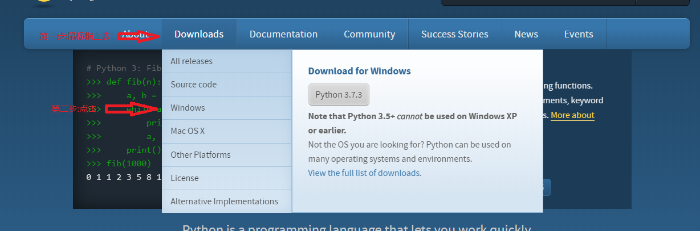
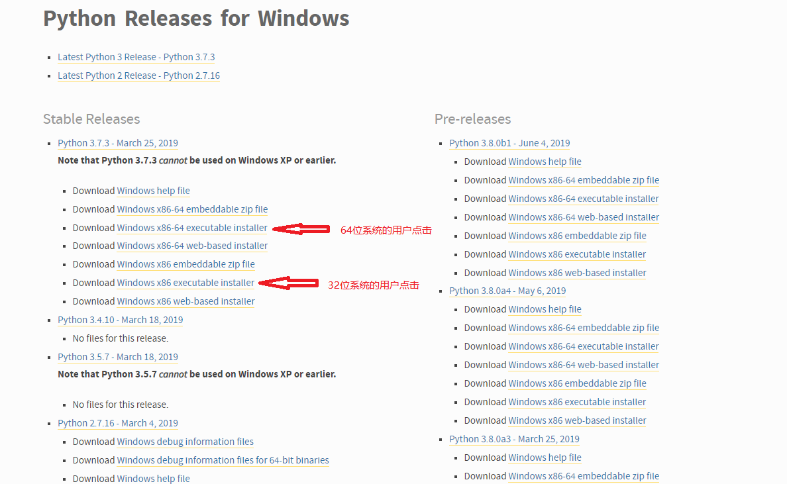
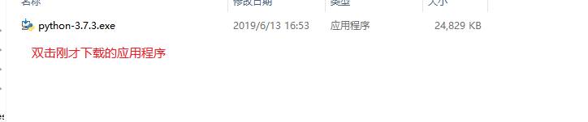
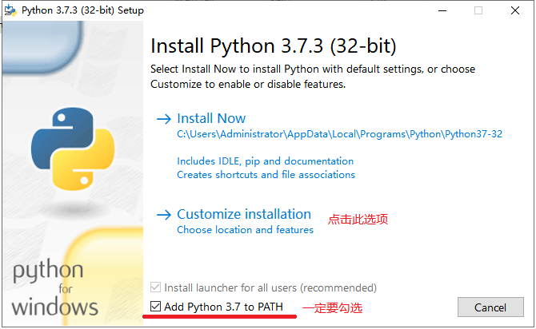
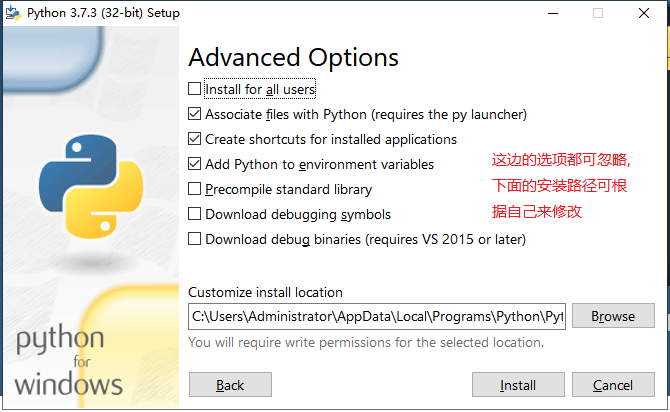
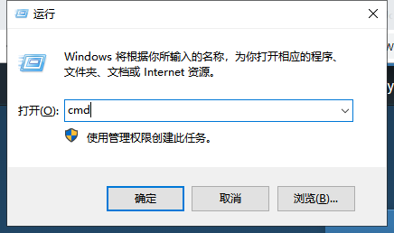
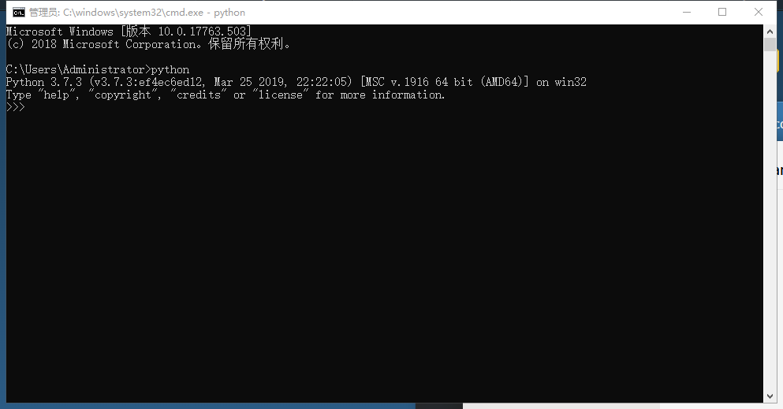
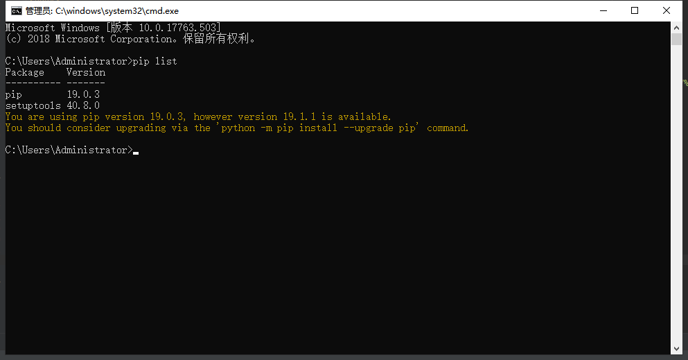

Python安装教程-windows
1. 进入Python官网: https://www.python.org/
2. 鼠标放在Downloads菜单上,然后向下移动到Windows菜单上并点击

3. 根据自己的系统类型选择下载的文件

4. 下载完成后进入下载文件的目录,然后双击应用程序

5. 启动应用程序后会弹出以下界面

6. 第五步点击后直接点击 next 按钮(记得有pip的选项一定要勾选)
7. 最后一步根据自己需求来操作即可,确认后点击 install 按钮

8. 查看是否安装成功
按住(win+r)键会弹出运行窗口,然后输入 cmd,回车或点击确定
- 
cmd窗口弹出后,在命令行内输入 python,如弹出以下提示则安装成功
- 
-
如果提示:python不是内部或外部命令,说明你并没有勾选将Python添加入PATH环境的选项(查看第五步)
python安装成功后查看pip是否安装成功,在cmd命令行里输入 pip list
- 
-
如安装失败则说明没有勾选安装pip的选项(查看第六步)